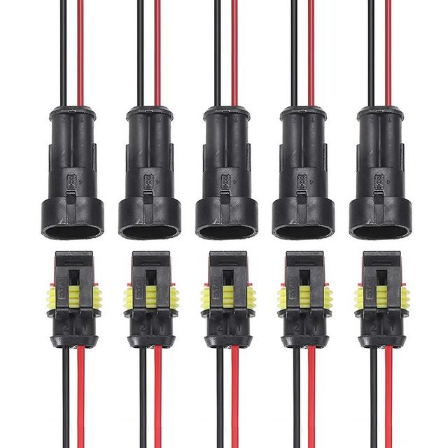
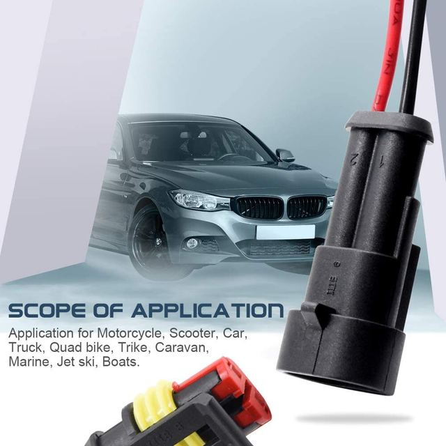
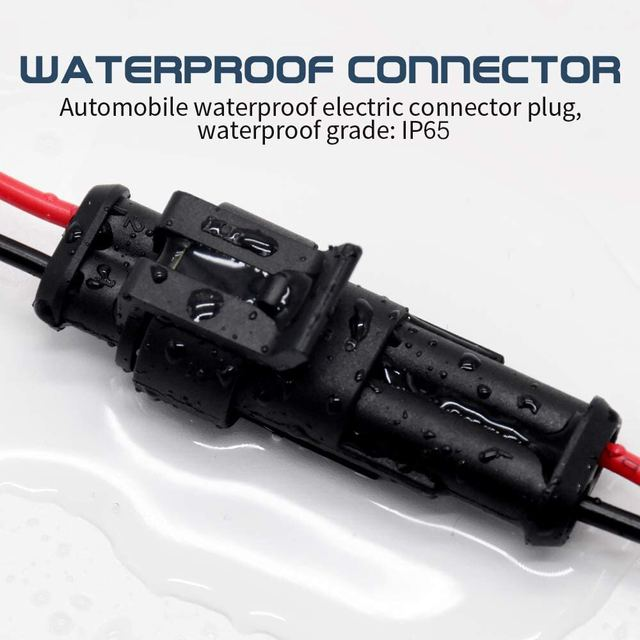
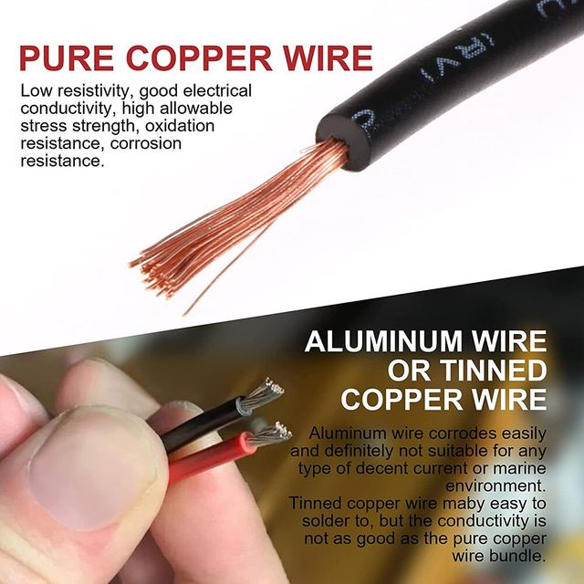
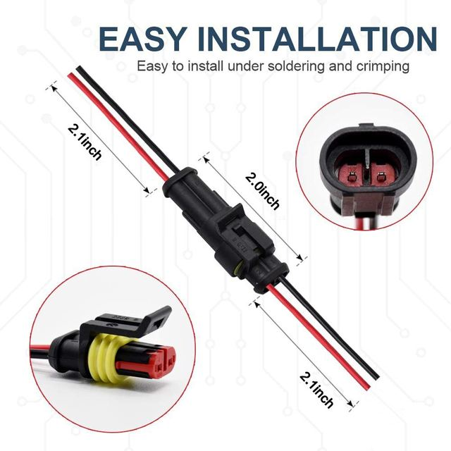
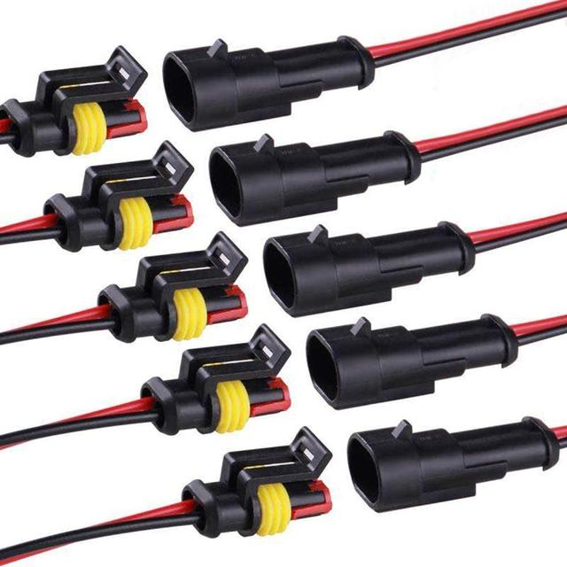

Feature:
-Made of PA66 nylon material for thermostability and durability
-Includes 5 Pairs of 2-pin waterproof connectors with male and female plugs and 2.12inch wires
- Suitable for various applications such as Motorcycle, Scooter, Car, Truck, Quad bike, Trike, Caravan, Marine, Jet ski, Boats
- IP65 waterproof level for reliable performance in wet environments
- Easy to install with soldering and crimping, plug and play structure
Specification:
Material: PA66 nylon
Wire gauge: 20AWG
Terminal Length: 5cm/2.0inch (approx.)
Wire Length: 5.38cm/2.12inch (approx.)
Waterproof level: IP65
Connector type: Male and female plugs with 2.12inch wires
Package included:
5 Pairs of 2-pin waterproof connectors





